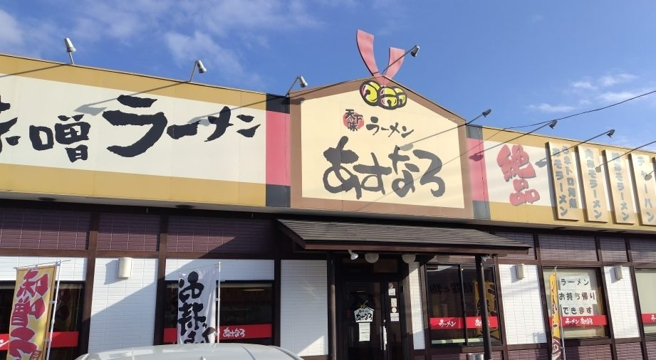
MISO RAMENあすなろ 三和本店
営業時間を確認中 ご予約を承ります- ところ
- 茨城県古河市仁連1419
- 営業
- 11:00〜22:00（通し営業）
- お休み
- 火曜日
お座敷とカウンター席をご用意しております。お支払いは現金のみでございます。駐車場がございます。
混み合う時間帯は、入口のウェイティングボードにお名前をお書きください。
自家製麺・味噌らーめん
こだわりの合わせ味噌は、数十種類の食材を細かく擦り込んで北海道産の味噌とブレンドし、温度を管理しながら熟成させております。麺は自家製の極太ちぢれ麺。古河市に二軒、お待ちしております。

お座敷とカウンター席をご用意しております。お支払いは現金のみでございます。駐車場がございます。
混み合う時間帯は、入口のウェイティングボードにお名前をお書きください。
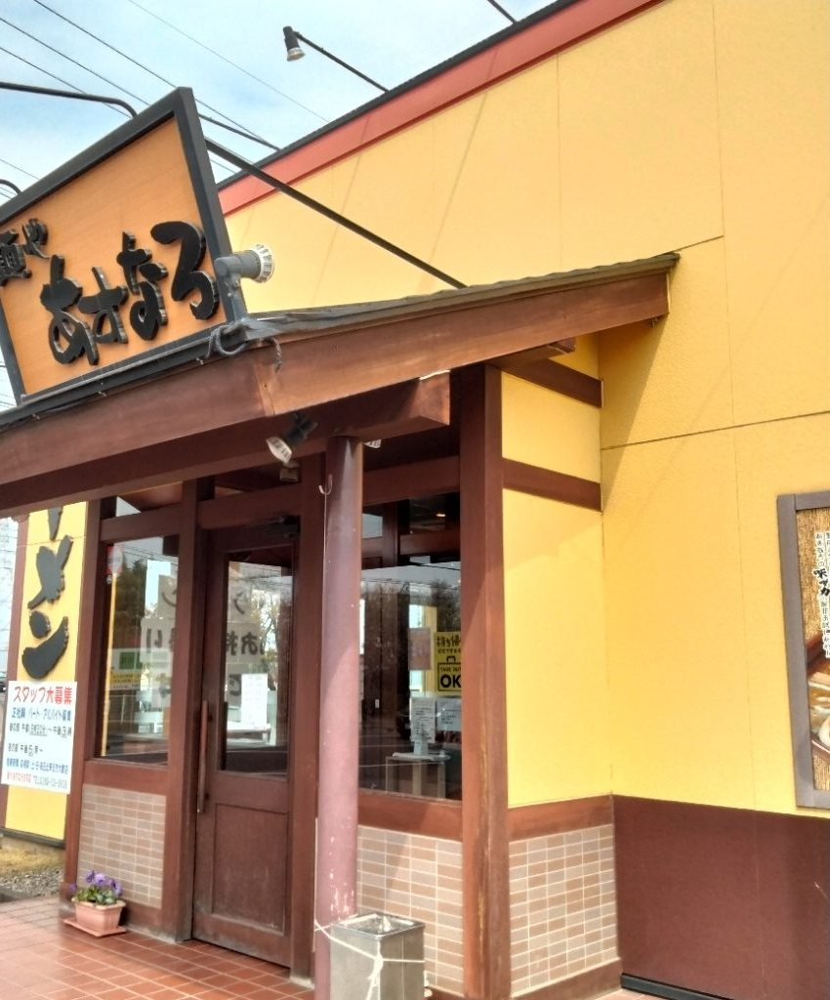
テーブル席とお座敷をご用意しております。お支払いは現金のみでございます。駐車場がございます。
ご予約は承っておりません。お持ち帰りも承っております。
こだわりの合わせ味噌は、数十種類の食材を細かく擦り込み、北海道産の味噌とブレンドしております。そこから温度を管理しながら熟成させたものを、毎日の一杯にお使いしております。
麺は店で打つ自家製麺でございます。味噌には極太のちぢれ麺を、和風おろしつけ麺には細麺をと、一杯ごとに合わせております。
味の濃さはお好みで加減いたします。濃いめ・薄めのご希望は、ご注文のときにお声がけください。茹で上がりまで少しお時間をいただくことがございます。
小学生以下のお子様には、お子様らーめんをご用意しております。餃子はにんにく抜きもお作りできますので、お仕事の前後でもお召し上がりいただけます。
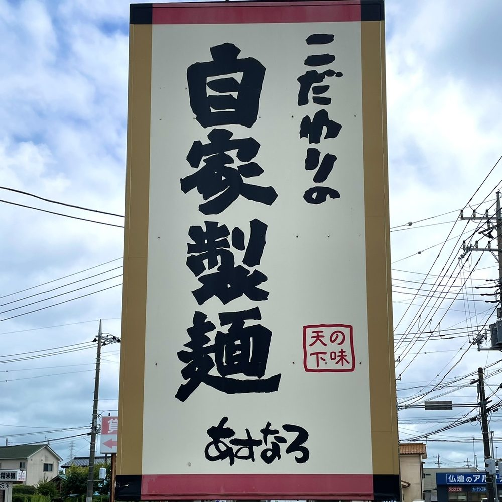
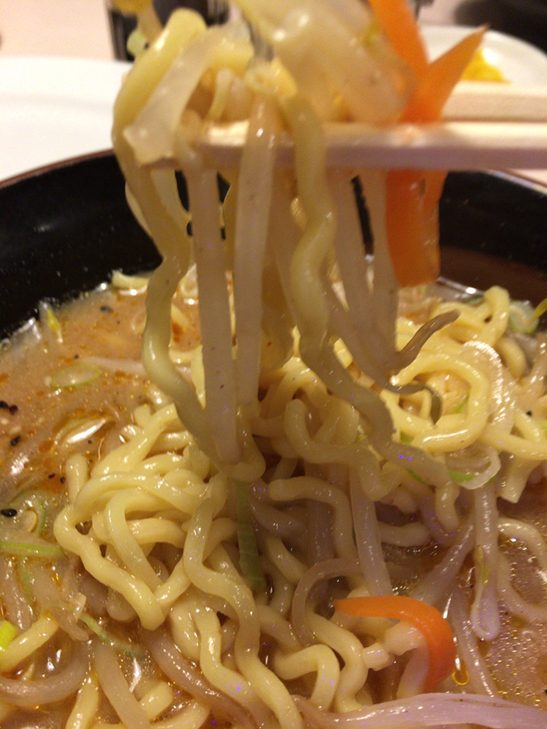
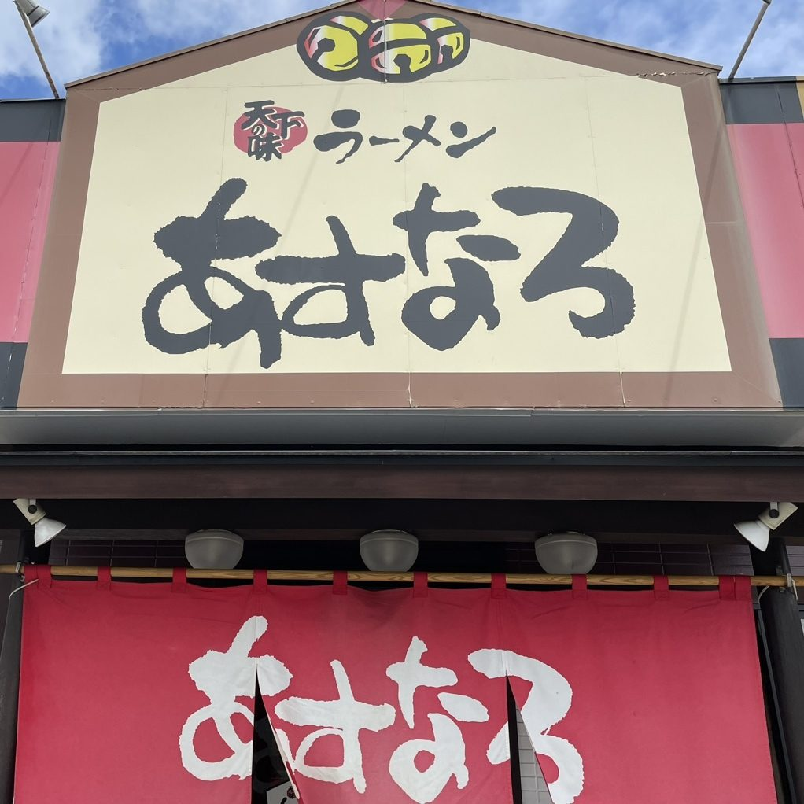
数十種類の食材を擦り込み、北海道産の味噌と合わせております。熟成のあいだも温度を管理しております。
麺は店で打っております。一杯ごとに太さを使い分け、つけ麺は並盛と大盛を同じお値段で承ります。
三和本店には米こうじを合わせた糀味噌の一杯を、古河店には麦味噌の一杯をご用意しております。
お値段はいずれも三和本店のもので、2026年7月現在の税込価格でございます。
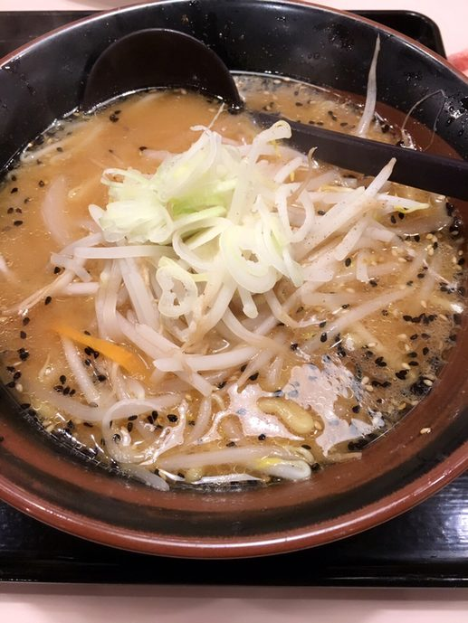
税込 814円
熟成させた合わせ味噌に、自家製の極太ちぢれ麺を合わせた一杯です。具を増やしたあすなろ味噌ラーメンもご用意しております。
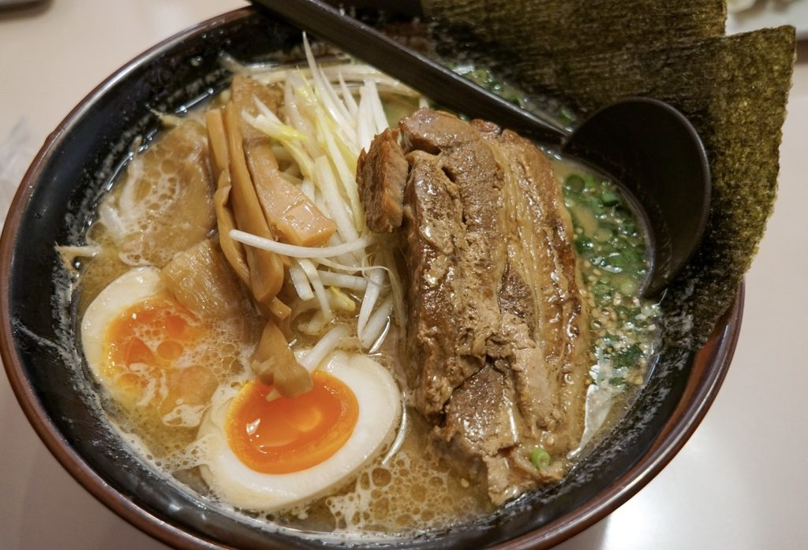
税込 1,375円
店で仕込んだ角煮を、まるごと一本のせております。箸でほろりと崩れるまで煮込んでおります。
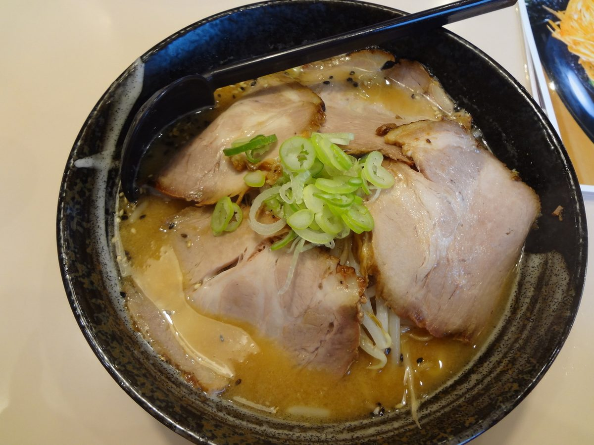
税込 1,144円
チャーシューを重ねてお出しします。ねぎを盛ったネギ味噌チャーシューもございます。
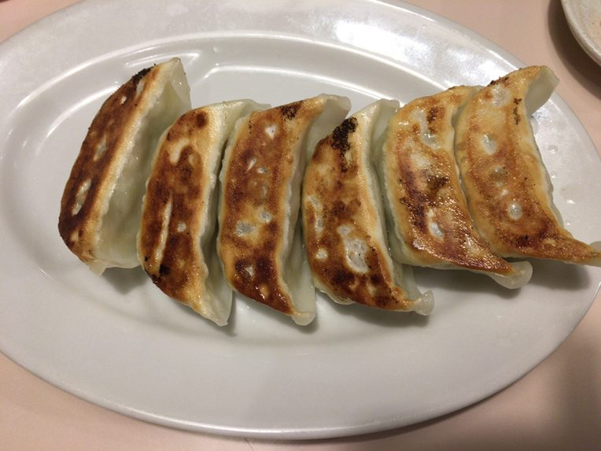
6ヶ 税込 440円／3ヶ 税込 275円
店で仕込む自家製の餃子でございます。にんにく抜きもお作りできますので、ご注文のときにお申しつけください。
仁連の三和本店と、上辺見の古河店。同じ屋号で、看板の顔つきが少し違います。
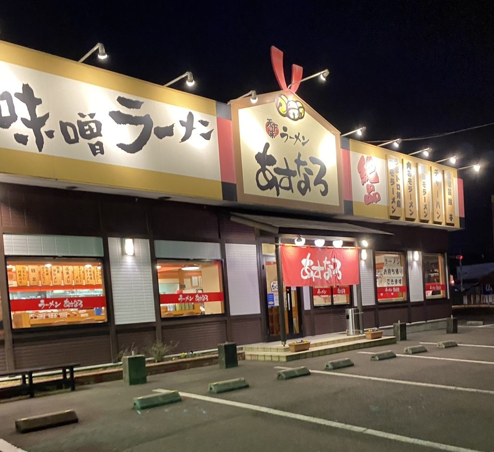
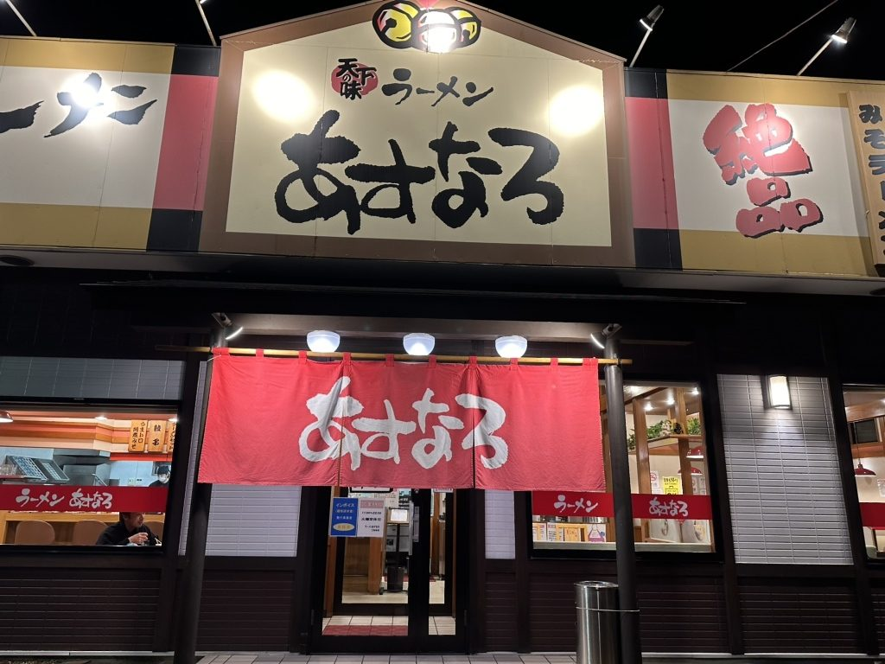
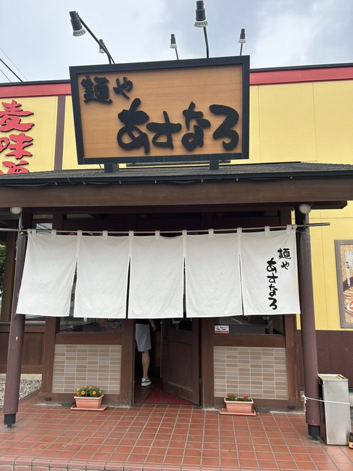
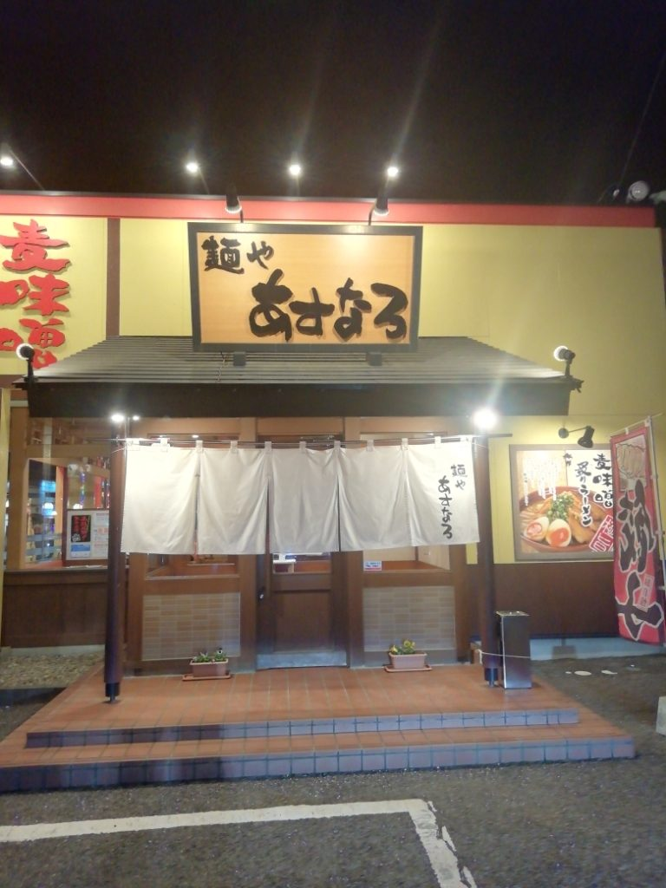
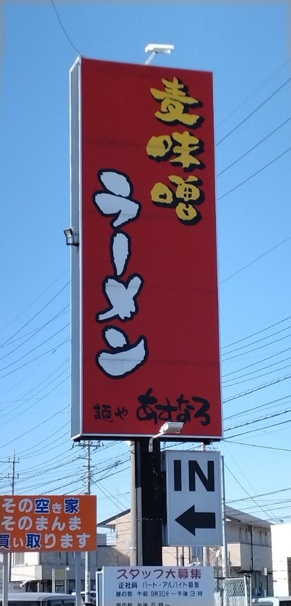
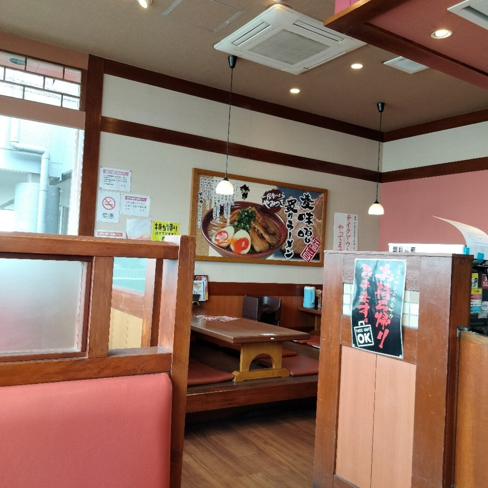
お寄せいただいたお言葉から、そのまま載せております。
「味噌ラーメンはもやしのネギだけのシンプルなもので、くどさやしつこさがなくいい塩梅においしい。炒飯も出来立てでグッドです。地元の方々からの人気がうなづけるお店です」
お客様の声より（三和本店）
「ここの餃子の虜になった原因を突き止めました。（中略）気になるその具材は『にんじん』です。にんじんの甘みが旨味となり調味料では出せない味になってます」
お客様の声より（古河店）
「シャバっとしたライトなスープで麦味噌本来の甘さ、風味を味わえます。麺はもちもち太麺。パキパキゆでもやしややわらかチャーシューが乗ります」
お客様の声より（古河店）
| 住所 | 〒306-0125 茨城県古河市仁連1419 |
|---|---|
| 電話 | 0280-76-8735 |
| 営業時間 | 11:00〜22:00（通し営業） |
| 定休日 | 火曜日 |
| ご予約 | お電話で承ります |
| お席 | カウンター席・テーブル席・お座敷／全席禁煙 |
| 駐車場 | ございます |
| お支払い | 現金のみ |
混み合う時間帯は、入口のウェイティングボードにお名前をお書きください。外でお待ちの方にも、順にお声がけいたします。
| 住所 | 〒306-0234 茨城県古河市上辺見480-4 |
|---|---|
| 電話 | 0280-33-3838 |
| 営業時間 | 11:00〜14:50 17:30〜22:00 |
| 定休日 | 火曜日・水曜日 |
| ご予約 | 承っておりません |
| お席 | テーブル席・お座敷 |
| お持ち帰り | 承っております |
| 駐車場 | ございます |
| お支払い | 現金のみ |
お昼の営業は14:50まででございます。中休みをはさみ、夜は17:30からお迎えいたします。